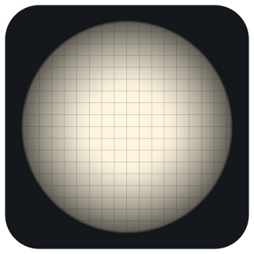
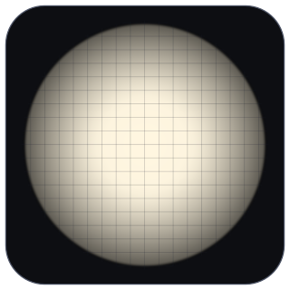

Real Cameras are Radiometric
A radiometric camera model for calibration by inverse rendering
Authors to be announced CVPR 2027 (under review)


One radiometric camera around a geometric model
The model extends the classical pinhole model by a lens and an aperture to capture the radiometric properties of real cameras — vignetting, defocus and distortion.
Calibration by inverse rendering
Radiometric and geometric camera parameters are inferred by inverse rendering of real images, from the light energy the sensor measures rather than from features found by a detector.
Detector biases revealed
The evaluation reveals systematic biases in the AprilGrid and Siemens-star detectors used by today's calibration tools, and the method outperforms the state of the art in geometric calibration accuracy.
<!– TEASER: the paper's detector-bias figure goes here after the CVPR decision (owner, 2026-11-10) –>
Abstract
The pinhole camera model has been proven extremely useful for 3D computer vision based on geometric primitives such as points, lines or conics. Real cameras however do not directly measure the position of such primitives. Rather, the geometric pinhole paradigm requires an intermediate step that searches the direct light energy signal collected by the sensor (the image) for discrete primitives, e.g. a feature detector. These detectors can be biased, fail under certain conditions, and converting the original photon/sensor noise to some “feature uncertainty” is challenging. Inspired by forward models from computer graphics and direct SLAM methods, we propose a novel camera model for computer vision that extends the classical pinhole model by a lens and aperture in order to capture radiometric properties of real cameras. We demonstrate that the model can be employed in inverse rendering approaches to infer radiometric and geometric camera parameters from real images of different lenses that exhibit vignetting, defocus, a capability that current differentiable rendering frameworks are lacking, and argue that the model could be used for many other vision and photogrammetry problems with real lenses. Besides outperforming the state-of-the-art in geometric calibration accuracy (and yielding vignetting & depth-of-field calibration on top), our evaluation also reveals systematic biases in april(-grid) and siemens star detectors as commonly employed in today's calibration tools.
BibTeX
@inproceedings{realcameras2027,
author = {Authors to be announced},
title = {Real Cameras are Radiometric},
booktitle = {IEEE/CVF Conference on Computer Vision and Pattern Recognition (CVPR)},
year = {2027},
}